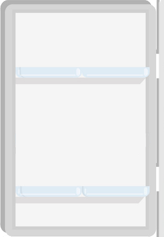

<div id="main">
    <figure id=figura appStyleGetter [height]="height" [width]="width">
        <map name=recortes id=recortes>
              <!--A1-->
              <area shape=poly
              coords={{mapCoorABCD}}>
              <!--A2-->       
              <area shape=poly 
              coords={{mapCoorMNOP}}>
      
          
      
          <!--IMPORTANTE CAPA ARRIBA CUANDO SE SELECIONA ALGO-->
        
        </map>
      
          <!--USA EL MAPS: ES TRANSPARENTE-->
        
      
      </figure>
      
      <svg xmlns="http://www.w3.org/2000/svg" version="1.1" >
          <defs>
              <clipPath id=A1>
                  <polygon [attr.points]="mapCoorABCD"></polygon>
              </clipPath>
              <clipPath id=A2>
                  <polygon [attr.points]="mapCoorMNOP" ></polygon>
              </clipPath>
              
               
          </defs>
      </svg>
</div>